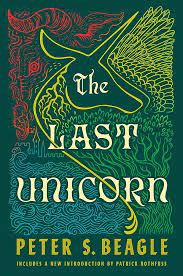
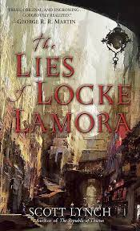
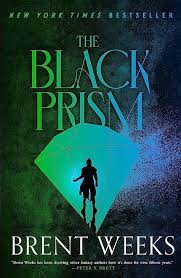
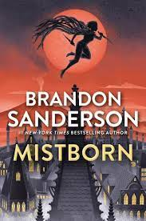
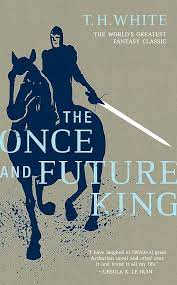

The Night Circus
The fantasy book "The Night Circus" by Erin Morgenstern tells the tale of Celia and Marco, two young magicians who have been preparing since they were young to compete in an enigmatic and complex competition. The magical circus that appears out of nowhere and is only open at night serves as their battlefield. Without their knowledge, the competition forces them to participate in a high-stakes game where the outcomes impact not only their own lives but also the future of the circus. In the midst of their rivalry, Celia and Marco grow close as they work out the nuances of the game and deal with the fallout from their magical duel. Love, sacrifice, and the fascinating realm of magic are all interwoven throughout the narrative.

The Last Unicorn
Classic fantasy book "The Last Unicorn" by Peter S. Beagle chronicles the journey of a unicorn who thinks she is the last of her kind. The unicorn sets out to find other people who share her species' extinction after learning of rumors to that effect. Molly Grue and Schmendrick the magician are two of the people she meets along the road who accompany her in the hunt. On their quest, they come across Red Bull, the strong and cunning creature that King Haggard sent into hiding in order to drive the unicorns into hiding. The unicorn and her journey through a world where magic is vanishing will force the unicorn to face issues such as love, mortality, and the conflict between good and evil.The book delves into themes of identity, bereavement, and the eternal power of love and magic, all through exquisite writing.

The Blade Itself
The first book in Joe Abercrombie's "The First Law" trilogy, "The Blade Itself," is set in a grim and intricate fantasy world. Amidst political intrigue, war, and personal struggles, the lives of several main characters in the story intersect.A warrior searching for atonement, Logen Ninefingers, is drawn into battles much bigger than himself. Navigating the perilous politics of the corrupt city of Adua is Inquisitor Glokta, a former swordsman turned torturer because of previous betrayals. Jezal dan Luthar, a haughty and conceited nobleman, hopes to achieve fame by emerging victorious in a renowned fencing competition.These characters' paths eventually cross, drawing them into an impending conflict and a threat that has the potential to upend their entire world. The world of "The Blade Itself" is one of darkness and moral ambiguity, where the distinction between heroism and villainy is blurred. It is a story of ambition, betrayal, and the consequences of power.

The Name of the Wind
First in the "Kingkiller Chronicle" series, Patrick Rothfuss' "The Name of the Wind" tells the story of the protagonist, Kvothe, over the course of three days.The story starts with Kvothe's early years as a talented and curious youngster raised in the company of a touring theatrical troupe. Tragic events occur when his family is brutally murdered by the Chandrian, a mysterious group of beings. Kvothe promises to find out the real reason for their existence, alone and out for vengeance.Once admitted to the esteemed University, he works on his magical skills, faces obstacles, and pursues his curiosity about the Chandrian. Kvothe experiences hardships, befriends people, falls in love, and comes across a variety of magical and dangerous creatures along the journey."The Name of the Wind" is an incredibly intricate and captivating story that delves into themes of magic, music, love, grief, and the quest for the truth. It chronicles Kvothe's rise from a gifted youngster to a well-known individual as he tries to solve the mysteries of the past and reach his potential.

Storm Front
"Storm Front" is the first book in Jim Butcher's "The Dresden Files" series. It centers on Harry Dresden, a wizard and private eye in contemporary Chicago. Harry is an expert on paranormal cases and works as a consultant for the police force in this gripping urban fantasy book.Harry is brought in to help with the investigation when a string of gory killings involving magical components take place in the city. As he investigates the matter further, he finds that the city as a whole is in danger from a sinister force in addition to himself. He encounters a variety of supernatural creatures and unearths long-kept secrets as he makes his way through the complexity of the magical realm.Harry must work quickly to solve the mystery while fending off both supernatural and human opponents with his cunning, magical skills, and sense of humor. The world that magic and contemporary crime collide in "Storm Front" opens readers up to an exciting and action-packed series.

The Lies of Locke Lamora
"The Lies of Locke Lamora" is a gripping fantasy book written by Scott Lynch that chronicles the adventures of Locke Lamora, a cunning con man and the head of the Gentlemen Bastards, a gang of thieves in the city of Camorr. The story, which is set in a finely detailed world with Venetian influences, follows Locke and his group as they work their way through the complex criminal underworld, committing elaborate heists and scams to target the wealthy elite.The delicate balance of power among the city's criminal factions is upset by an enigmatic figure known as the Gray King, upending their carefully built world. Locke and his group become entangled in the Gray King's schemes, which exposes them to challenges and deadly threats that put their survival instincts to the test.Elements of friendship, conspiracy, and the conflict between good and evil are all intricately woven throughout the book. In order to survive, wit and resourcefulness are essential in this perilous world where loyalty and deceit must be carefully balanced. Locke's journey is followed throughout, highlighting his fortitude, tenacity, and the ability of people to persevere in the face of hardship, treachery, and peril.

The Black Prism
The fantasy novel "The Black Prism" by Brent Weeks is the first in the "Lightbringer" series, which takes place in a world where magic is derived from colors and light.The protagonist of the tale is Gavin Guile, a mysterious and strong prism with the ability to use all of magic's colors. Every color in this world bestows a unique set of abilities, and the Prism is the only one who can wield them all. But Gavin has a big problem when he finds out he has a son named Kip, whose existence he has to keep a secret.Gavin tries to keep things in balance in the Seven Satrapies amidst political intrigue and the threat of war. In the meantime, Kip faces his own struggles without realizing his ancestry and realizes he has the capacity to be incredibly powerful.Gavin and Kip are enmeshed in a perilous struggle that has the potential to alter the course of history as hostilities rise and long-forgotten secrets come to light. "The Black Prism" is a story about magic, clandestine meetings, power struggles, and the fallout from possessing extraordinary magical powers in a world on the verge of collapse.

Assasin's Apprentice
"Assassin's Apprentice" is the first book in the engrossing fantasy series "Farseer Trilogy" written by Robin Hobb.The narrative centers on FitzChivalry Farseer, also referred to as Fitz, who is Prince Chivalry of the Six Duchies' illegitimate son. Fitz is taken under King Shrewd's wing when he is a young child and is brought to Buckkeep Castle, the royal family's residence. He learns that he has the Skill—a magical power that enables telepathic communication and interpersonal influence.Fitz, who has been trained in the art of assassination by the elusive and accomplished assassin Chade of the castle, gets caught up in the political politics of the realm. Fitz picks up assassination skills and turns into a devoted but stealthy weapon for the kingdom's survival as tensions rise and threats materialize.The narrative goes deeply into Fitz's conflicts over who he is, where he belongs in the royal court, and what he must give up to serve the throne. The story of "Assassin's Apprentice" revolves around mystery, allegiance, and the difficulties of exercising authority in a dangerous and treacherous realm.

Mistborn
The first novel in Brandon Sanderson's epic fantasy series, "Mistborn," takes place in a world where ash falls continuously from the sky and the Final Empire is ruled by the Lord Ruler, a despotic figure.Vin, a young, cunning thief with hidden magical abilities, is the protagonist of the tale. She learns about her abilities under the guidance of Kelsier, a charming and accomplished Mistborn—someone who can absorb and use different metals to acquire magical abilities.With a bold plan in mind, Kelsier wants to topple the oppressive rule of the Lord Ruler. Vin learns about Allomancy, the magic of using metals, as she gets entangled in Kelsier's rebel group and joins their mission to overthrow the empire.The narrative deftly interweaves themes of oppression resistance, political intrigue, and rebellion. In order to overcome obstacles, forge alliances, and get ready for a revolution that might alter the course of history, Vin and the crew must navigate a dangerous and mysterious world. A world ruled by a merciless ruler, "Mistborn" is a story of magic, sacrifice, and the struggle for freedom.

The Once and Future King
The classic Arthurian fantasy book "The Once and Future King" by T.H. White recounts the myth of the heroic King Arthur.The various sections that make up the book's sections each concentrate on a distinct period of Arthur's life. The tale starts with a young Arthur, referred to as Wart, who receives mentoring from the wizard Merlin. Wart gains insight into leadership, justice, and the duties of a monarch under Merlin's tutelage.T.H. White's classic Arthurian fantasy book "The Once and Future King" narrates the myth of King Arthur, a hero of valor.The book is broken up into multiple sections, each of which focuses on a distinct period of Arthur's life. It starts with the tale of Wart, a young Arthur who is taught by the wizard Merlin. Wart gains important knowledge about justice, leadership, and kingly duties under Merlin's tutelage.

The Magicians
Lev Grossman's "The Magicians" tells the tale of Quentin Coldwater, a young man who stumbles upon the reality of the magical world he had always imagined from his beloved childhood books.Quentin studies magical theory, learns spells, and makes friends with other students after being accepted into the enigmatic and exclusive Brakebills magic school. Nevertheless, despite being in this magical place, Quentin struggles with feelings of emptiness and discontent and becomes disillusioned with the reality of magic.Fillory, a magical place from a series of well-loved children's books, is revealed to exist as Quentin and his friends continue their studies and delve deeper into the complexities of magic. Quentin and his friends set out on a mission to locate and investigate Fillory because they are fascinated by the concept of this magical place.But as they travel through Fillory, they come to understand that the magical realm isn't as perfect as they had thought, and they encounter difficulties that put their skills, their relationships, and their understanding of magic itself to the test.A darker, more grounded depiction of magic is combined with fantasy and coming-of-age elements in "The Magicians" story. It delves into issues of desire, escape, the fallout from authority, and the difficulties of growing up in a world where fiction and reality collide.